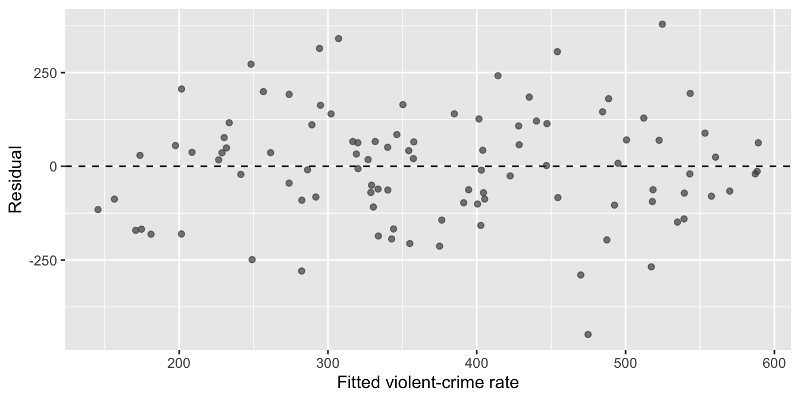

Practice Problems · Session 11
Multiple regression: slopes with units, R², lurking variables, and diagnostics
Ungraded self-checks. Work each problem in your own R session before clicking the solution. These use different data and variables than the homework on purpose — if you can do these cold, Homework 11 (and Checkpoint 3’s first regression on your own data) will feel routine.
Problems that use data need only this setup — the same 100 cities as the Session 10 practice bank, where poverty and the violent-crime rate ran r = .61. Correlation said the two travel together; regression asks how much, and what a second predictor changes. One row = one city — every sentence you write stays at that level.
Problem 1 · One predictor: make the slope speak units
Regress vcr_2025 (violent crimes per 100,000 residents) on poverty_rate (percentage points). Interpret the slope with units, say what the intercept means here (and whether any real city lives there), and connect R² to Session 10’s r = .61.
Solution
Call:
lm(formula = vcr_2025 ~ poverty_rate, data = cities)
Residuals:
Min 1Q Median 3Q Max
-477.63 -91.04 13.49 94.26 390.25
Coefficients:
Estimate Std. Error t value Pr(>|t|)
(Intercept) 110.298 37.778 2.920 0.00435 **
poverty_rate 14.461 1.906 7.586 1.92e-11 ***
---
Signif. codes: 0 '***' 0.001 '**' 0.01 '*' 0.05 '.' 0.1 ' ' 1
Residual standard error: 150.8 on 98 degrees of freedom
Multiple R-squared: 0.37, Adjusted R-squared: 0.3635
F-statistic: 57.54 on 1 and 98 DF, p-value: 1.92e-11cor(cities$poverty_rate, cities$vcr_2025)^2[1] 0.3699531- Slope ≈ 14.5: each additional percentage point of city poverty is associated with about 14.5 more violent crimes per 100,000 residents, in this sample. Units on both ends or the number means nothing.
- Intercept ≈ 110: the predicted rate for a city with 0% poverty — no city in the data comes close (the minimum is 4.4%), so it anchors the line rather than describing anywhere real.
- R² = .37, which is exactly .61² — with one predictor, R² is last session’s correlation squared: poverty accounts for about 37% of the city-to-city variance in violent-crime rates, leaving 63% to everything else.
A slope is a rate with units (outcome units per predictor unit); R² is the share of outcome variance the model captures — two different questions about the same line.
Problem 2 · A second predictor: does it earn its keep?
Cities differ in police staffing too. Add police_per_10k (sworn officers per 10,000 residents) to the model. Compare the poverty slope across the two models, interpret the staffing coefficient with its 95% CI, and check what happens to adjusted R². Then write the honest one-sentence conclusion about staffing.
Solution
Call:
lm(formula = vcr_2025 ~ poverty_rate + police_per_10k, data = cities)
Residuals:
Min 1Q Median 3Q Max
-448.76 -91.34 5.14 85.70 379.28
Coefficients:
Estimate Std. Error t value Pr(>|t|)
(Intercept) 179.978 59.917 3.004 0.00339 **
poverty_rate 14.592 1.897 7.694 1.19e-11 ***
police_per_10k -3.232 2.166 -1.492 0.13889
---
Signif. codes: 0 '***' 0.001 '**' 0.01 '*' 0.05 '.' 0.1 ' ' 1
Residual standard error: 149.9 on 97 degrees of freedom
Multiple R-squared: 0.3841, Adjusted R-squared: 0.3714
F-statistic: 30.25 on 2 and 97 DF, p-value: 6.188e-11confint(city_m2) 2.5 % 97.5 %
(Intercept) 61.060105 298.896503
poverty_rate 10.828022 18.356175
police_per_10k -7.530335 1.066661 adj_m1 adj_m2
0.3635241 0.3713927 The poverty slope barely moves (14.46 → 14.59) — poverty and staffing are nearly uncorrelated here (r ≈ .05), so there was almost no shared variance to reapportion. The staffing coefficient is −3.2 violent crimes per 100k per additional officer per 10k residents, 95% CI [−7.5, 1.1], p = .14: the interval spans zero, and adjusted R² ticks up only trivially (.364 → .371). The honest sentence: “Holding poverty constant, police staffing showed no reliable association with the violent-crime rate in these cities.” A new predictor has to earn its coefficient — a CI straddling zero and a flat adjusted R² is the data declining the offer, and saying so is a legitimate finding.
Problem 3 · The lurking third variable, caught in the act
Across 90 towns, an analyst finds that towns with more licensed pawn shops report far more burglaries, and drafts a memo proposing pawn-shop license caps. Simulate the analyst’s data — note what actually generates both variables:
- Fit
burglaries ~ pawn_shops. How does the coefficient look — and does anything in the output warn you it’s misleading? - Now add
population. What happens to the pawn-shop coefficient, and what does that tell the memo’s author?
Solution
Estimate Std. Error t value Pr(>|t|)
(Intercept) 63.323 25.188 2.514 0.014
pawn_shops 48.350 3.217 15.031 0.000 Estimate Std. Error t value Pr(>|t|)
(Intercept) 37.007 12.830 2.884 0.005
pawn_shops 1.365 3.347 0.408 0.684
population 5.290 0.329 16.056 0.000About 48 more burglaries per additional pawn shop, p < .001 by a mile — and nothing in the output warns you. The model can only see the variables you gave it.
Holding population constant, the pawn-shop coefficient collapses to ≈ 1.4 with p ≈ .68 — nothing — while population comes in at ≈ 5.3 burglaries per additional thousand residents. Bigger towns simply have more of both. That collapse is “holding constant” doing real work: comparing towns of the same size, pawn-shop counts tell you nothing about burglary. And the sobering corollary: regression can only hold constant the lurkers you measured and included — the ones you didn’t are still at large.
Problem 4 · Diagnostics: the residual plot and VIF
Back to the real model, city_m2 from Problem 2. Make the residuals-vs-fitted plot and run vif(). For each: what is it checking, and what does it show here?
Solution
tibble(fitted = fitted(city_m2), residual = resid(city_m2)) |>
ggplot(aes(fitted, residual)) +
geom_hline(yintercept = 0, linetype = 2) +
geom_point(alpha = 0.7, color = "grey30") +
labs(x = "Fitted violent-crime rate", y = "Residual")
vif(city_m2) poverty_rate police_per_10k
1.002158 1.002158 The residual plot checks whether the model’s misses are patternless: no curve (the straight-line shape isn’t visibly wrong) and roughly even spread across the fitted range. This one is what healthy looks like — a shapeless band centered on zero, no bend, no widening, with the biggest misses (reaching roughly ±400) scattered across the range rather than piling up at one end. Compare Lab 11’s Chicago plot, where the spread visibly widened at high fitted values; that’s the kind of pattern this plot exists to catch.
VIF checks a different disease — predictor redundancy. Both values sit at ≈ 1.00 (poverty and staffing share almost nothing, r ≈ .05), so each coefficient is estimated on its own information. The residual plot audits the misses; VIF audits the predictors — one model, two separate health checks.
Problem 5 · Both traditions, one sentence each
Fit the Bayesian twin of city_m2 with brm() (expect the Compiling Stan program… pause — normal, not frozen), look at the posterior summaries, and then write the pair of reporting sentences: one frequentist (estimate, CI, p) and one Bayesian (the credible-interval sentence you’re allowed to say) about the poverty coefficient.
Solution
city_bayes <- brm(vcr_2025 ~ poverty_rate + police_per_10k, data = cities,
chains = 2, iter = 2000, seed = 705, refresh = 0) Estimate Est.Error Q2.5 Q97.5
Intercept 178.32 60.45 62.08 294.22
poverty_rate 14.65 1.97 10.71 18.35
police_per_10k -3.18 2.20 -7.46 1.01The posterior lands almost exactly on lm()’s estimates — expected with brms default priors (say so when you report: “brms default priors, 2 chains × 2,000 iterations, seed 705”) and 100 cities of data.
Frequentist: “Holding police staffing constant, each additional percentage point of poverty was associated with about 14.6 more violent crimes per 100,000 residents (b = 14.59, 95% CI [10.8, 18.4], p < .001).”
Bayesian: “Given the data and priors, there is a 95% probability the poverty coefficient lies between roughly 10.9 and 18.3 — zero is not a credible value.”
Same formula, nearly identical numbers — what changes is the sentence each tradition licenses, and the Bayesian one makes the direct probability statement the confidence interval never could.
Problem 6 · The sentence audit
Four sentences drafted from the Problem 2 model. Two are defensible; two are not. Sort them, and fix the broken ones.
“Holding police staffing constant, each additional percentage point of poverty was associated with about 14.6 more violent crimes per 100,000 residents (95% CI [10.8, 18.4]).”
“Poverty drives up violent crime in American cities.”
“R² = .38, so the model correctly predicts 38% of cities.”
“Police staffing showed no reliable association with the violent-crime rate in these cities (b = −3.2, 95% CI [−7.5, 1.1]).”
Solution
2.5 % 97.5 %
(Intercept) 61.1 298.9
poverty_rate 10.8 18.4
police_per_10k -7.5 1.1summary(city_m2)$r.squared[1] 0.3840918Defensible: (a) and (d). Both state an adjusted association, with magnitude, units, uncertainty, and the holding-constant clause — and (d) shows that “no reliable association” is a reportable result, not a failure.
(b) fails twice: “drives up” is a causal verb no cross-sectional model earns (lurkers we never measured are still at large — Problem 3’s lesson), and “American cities” generalizes a 100-city sample to a population the data can’t speak for. Fix: “In these 100 cities, higher poverty was associated with higher violent-crime rates, holding staffing constant.”
(c) misreads R²: .38 is the share of variance in the outcome the model accounts for — not an accuracy rate, and not a count of cities predicted “correctly.” Fix: “The two predictors together account for about 38% of the city-to-city variance in violent-crime rates.” The audit habit: check every regression sentence for causal verbs, level of analysis, units, and what R² actually is.